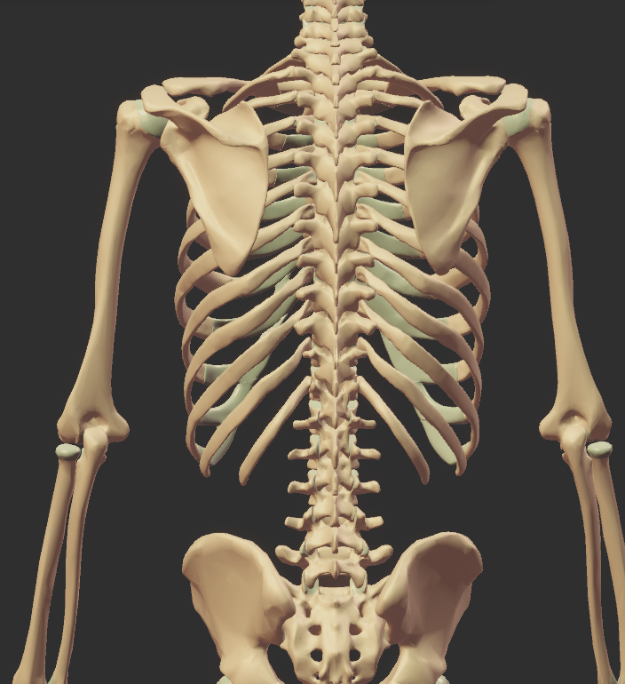

← 研修タイムテーブルに戻る
解剖① 筋肉・起始停止
広背筋
小テスト
1
広背筋
こうはいきん
の
起始
きし
と
停止
ていし
は どこですか。
下の 絵の 上を 指して ください。

こたえを 見る
起始
①
胸椎
きょうつい
7〜12・
腰椎
ようつい
1〜5
②
腸骨稜
ちょうこつりょう
③
下部肋骨
かぶろっこつ
④
肩甲骨下角
けんこうこつかかく
停止
小結節稜
しょうけっせつりょう
2
設問をここに記載します。
3
設問をここに記載します。
4
設問をここに記載します。
5
設問をここに記載します。